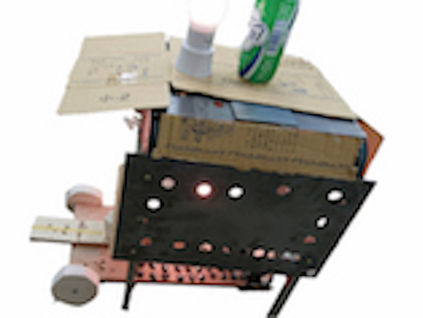
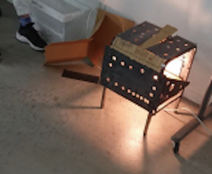

パンツァーDD

１講時
穴あけチーム
やったこと
道具の理解
ドリルドラバー、インパクトドライバーで木や金属板に穴を開ける。
ジグソーで開けた穴に刃を入れ丸くかたどる。
ポンチで木や金属板に穴開ける。
パンチャーで穴を開ける。

製作
ウルトラファクトリーの廃材置き場にあった金属と買ってきてもらった電球でひかる椅子を作った。
ドリルドラバー、インパクトドライバー、ジグソー、パンチャーで出来た部品でパンツァーDD（戦車）を作った。
振り返って
道具の理解は十分に出来ていたがそれをワークショップに活かすことができなかった。
ただ円に切るだけではなく、円に切った後顔ハメ看板にしたりアンパンマンになるみたいにすればよかった。
失敗
ドリルドライバーは逆回転の状態で木材にはを当てると刃が傷つくし煙が出てきて火事の危険がある。